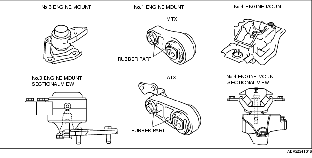

Engine mount construction [ZY]
• The exterior frame of the No.1 engine mount rubber is made of aluminum alloy, and is composed of a torque rod-shaped structure including an anti-vibration function, which regulates the conventional rubber function and the rotation from the powertrain.
• The No.3 engine mount rubber is oil-filled for noise reduction and vibration isolation.

• The engine is supported at the following three points: front part of the engine (No.3 engine mount), one side of the transaxle (No.1 engine mount), and rear upper part of the transaxle (No.4 engine mount). The supporting point at the side of the transaxle (No.1 engine mount) has been set at the transaxle's lowest edge. With this layout, the No.1 engine mount absorbs the rotation force generated under engine torque fluctuation and transmitted to the power train, and distributes the rotation force to the front and rear part of the engine (swing bob).